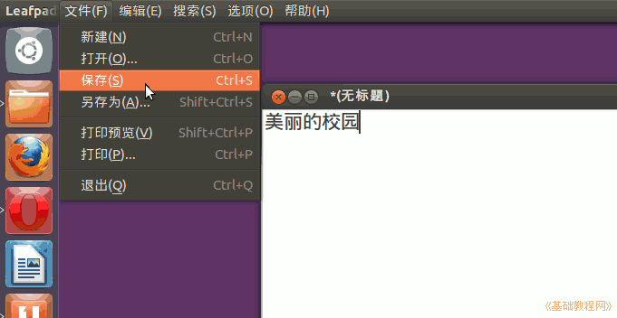

Ubuntu 入门操作指南
作者：TeliuTe 来源：基础教程网
二十一、leafpad 文字编辑器 返回目录 下一课leafpad 是一个小巧的文字编辑器，比 gedit 更简洁快速；
1、leafpad 文字编辑器
1）在软件中心或新立得中搜索安装 leafpad，然后在程序菜单面板的附件中可以找到；
2）点击主按钮，在搜索中输入 leafpad ，点击打开程序窗口；
3）按 Ctrl+空格键 调出中文输入法，输入一句话然后把鼠标移到桌面最上边，找到“文件”菜单点击选“保存”；

4）把鼠标移到屏幕最上边，点击“选项”菜单，打勾“自动换行”和“行号”；
5）再点菜单“选项－字体”，将字体大小调大些；
本节学习了 leafpad 文字编辑器的基础知识，如果你成功地完成了练习，请继续学习下一课内容；
本教程由86团学校TeliuTe制作|著作权所有
基础教程网：http://teliute.org/
美丽的校园……
转载和引用本站内容，请保留版权信息和本站链接。